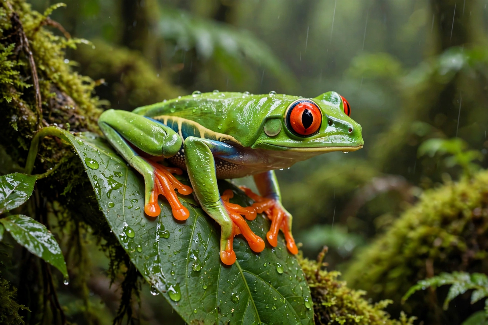

[Image placeholder: A red-eyed tree frog, a well-known amphibian]**Amphibians** are ectothermic, tetrapod vertebrates of the class **Amphibia**. All living amphibians belong to the group Lissamphibia and fall into three orders: frogs and toads (Anura, the great majority of the roughly 8,000+ known species), salamanders and newts (Urodela), and the limbless, burrowing caecilians (Gymnophiona).
Most amphibians begin life as aquatic, gill-breathing larvae (such as tadpoles) and metamorphose into air-breathing adults that also respire through moist skin. Because their permeable skin ties them to water and makes them sensitive to pollution and disease — notably the chytrid fungus — amphibians are among the most threatened groups of vertebrates.
Amphibians descend from lobe-finned fish in the Devonian period, about 370 million years ago; early forms such as Ichthyostega and Acanthostega were among the first vertebrates with limbs. Giant temnospondyls dominated many Carboniferous and Permian ecosystems before reptiles rose to prominence.
Most amphibians lay soft, jelly-coated eggs in water without a shell, unlike the amniotic eggs of reptiles and birds. Some species are direct developers or live-bearers, and frogs show extraordinary diversity of parental care, from poison-dart frog tadpole transport to the gastric-brooding frogs of Australia (now extinct).